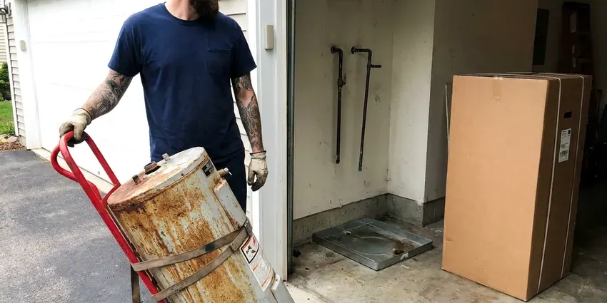
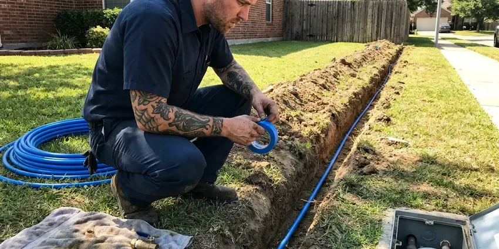
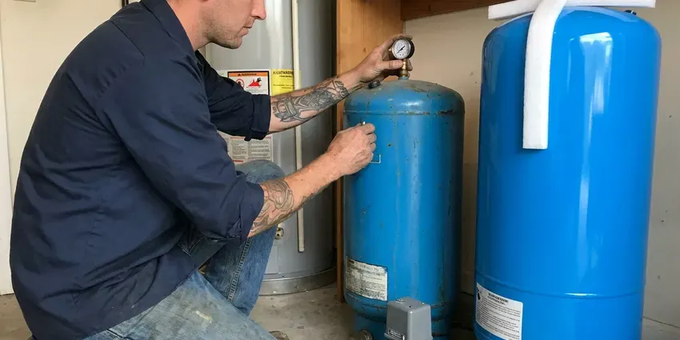

Tankless Water Heater Replacement in St. Albans, WV
Switch to endless hot water with a new tankless water heater in St. Albans, WV. GJK Plumbing provides professional replacement services.
- Reliable Hot Water
- Licensed Gas Line Technicians
- Upfront Pricing
- Fast Tankless Replacement

Endless Hot Water Starts With One Call in St. Albans, WV.
Contact us today for a free estimate and discover the benefits of on-demand hot water.
Your Go-To for Tankless Water Heater Replacement in St. Albans, WV
GJK Plumbing specializes in professional tankless water heater replacement for homes across St. Albans, WV. We know that upgrading to a tankless system is a real investment. Our goal is to provide a seamless installation that gets the most from your energy efficiency and hot water supply.
Our expertise includes:
- Clean integration with existing plumbing and gas lines.
- Safe gas and electric line connections for new units.
- Gas line sizing and upsizing for 199,000 BTU tankless units

Additional Plumbing Replacement Services in St. Albans, WV
When repairs are no longer enough, our replacement services in St. Albans, WV deliver modern, efficient equipment installed right.


Water Heater Replacement near St. Albans



Professional water line replacement, St. Albans

Customers
Why Choose GJK Plumbing for Tankless Water Heater Replacement in St. Albans, WV?
Testing well water every year or so is a smart habit in West Virginia, especially after flooding or nearby ground disturbance. Hard water is tough on tankless heat exchangers, and many early failures trace back to scale and skipped flushing. We size, install and set up each replacement so it holds up to your local water supply.
- Longer Lifespan, Tankless water heaters typically last longer than conventional tank units, often up to 20 years with proper maintenance, offering better long-term value.
- Scale Protection, Every install includes isolation valves so the heat exchanger can be descaled without cutting into the pipes.
- Clean Venting, We route venting to meet manufacturer clearances from windows, doors and rooflines.
Citywide Coverage
We replace tankless water heaters in every neighborhood of St. Albans, from newer builds with garage-mounted units to older homes converting from a tank. Our trucks carry venting kits and gas fittings for both interior and exterior installs.
Experienced Team
Our team installs tankless heaters every week and trains on manufacturer-specific setup, including recirculation programming and altitude settings. That experience shortens install time and cuts down on callbacks.
Safety-First Approach
We follow local code and manufacturer instructions for gas piping, combustion air, condensate disposal and venting terminations. Permits are pulled where required, and we test combustion before we leave.
Trusted Certified St. Albans Plumbing Services Professionals
At GJK Plumbing, we take pride in providing licensed, certified plumbing services throughout St. Albans, WV. Backed by recognized industry credentials, our experienced plumbers combine technical skill with genuine customer care. Whether it is repair, installation, or maintenance, we follow strict safety and quality standards to deliver lasting results you can trust.
Call Us Now PHCC Plumbing Contractor Recognition
PHCC Plumbing Contractor Recognition Better Business Bureau (BBB) Accreditation
Better Business Bureau (BBB) Accreditation Angi Certified Pro
Angi Certified Pro ISO 9001 Quality Management Certification
ISO 9001 Quality Management CertificationEfficient Tankless Water Heater Replacement Services in St. Albans, WV
Commercial Tankless Water Heater Replacement in St. Albans, WV
Businesses in St. Albans, WV often require robust hot water solutions, and tankless systems can provide the efficiency and capacity needed. We regularly replace commercial tankless units for restaurants, offices and other facilities with minimal disruption to your operations. Our plumbers are skilled with high-capacity models and complex plumbing layouts. We deliver a reliable hot water supply that meets your business's demands and health code requirements.

Emergency Tankless Replacement in St. Albans, WV
A tankless heater that leaks from the heat exchanger or refuses to ignite can leave you with no hot water at all. We offer same-day emergency replacement for common models and can usually get a unit installed the day you call. If your exact model is not in stock, we can sometimes do a temporary repair to restore hot water while the replacement ships. We shut off gas and water to stop any leak on arrival. Call (681) 223-3607 anytime your tankless quits.
Tank to Tankless Conversions in St. Albans, WV
Converting from a 40 or 50 gallon tank to tankless frees up floor space and ends standby heat loss in a garage or closet. The catch is that tankless units often need a larger gas line, often three quarter inch or bigger, plus new venting. We evaluate your meter size and pipe run before quoting so there are no surprises mid-job. We also cap or reroute the old flue and seal the roof penetration if it is no longer used. Plan for a conversion to take a full day.
Residential Tankless Water Heater Replacement in St. Albans
For homeowners in St. Albans, upgrading to a tankless water heater offers real benefits like endless hot water and reduced energy use. We assess your household's hot water demand to recommend the ideal sized unit, so you get optimal performance. Our team handles everything from safely disconnecting your old unit to installing the new tankless system. That includes any needed gas and water line adjustments and venting changes to meet current codes.
Like-for-Like Tankless Swaps in St. Albans
When your existing tankless has a cracked heat exchanger or a failed control board that is not worth repairing, a direct replacement is often the fastest fix. We match the new unit to your current gas line, venting type and mounting location whenever possible. Many Rinnai and Navien models share similar footprints, which keeps wall patching to a minimum. We also replace the old service valves if they are corroded or stuck. Most like-for-like swaps are finished in four to six hours.
Navien Tankless Water Heater Replacement in St. Albans, WV
Navien tankless water heaters are popular for their condensing technology, delivering high efficiency and performance. When it is time for a Navien tankless water heater replacement in St. Albans, WV, you can count on GJK Plumbing. We have extensive experience with Navien's advanced systems, including their combination boiler and water heater units. Our installation process focuses on dialing in your new Navien's performance, so you benefit from its energy-saving features and reliable hot water output.
Tankless vs. Tank Water Heater Replacement Cost in St. Albans, WV
When considering tankless water heater replacement in St. Albans, WV, it is natural to compare costs. While the upfront installation of a tankless unit can be higher than a traditional tank, the long-term energy savings and longer lifespan often make it the more economical choice. We provide clear, upfront pricing for both options. That helps you make an informed decision based on your budget and hot water needs, with no surprises.

Gas Tankless Water Heater Replacement in St. Albans
Many homes in St. Albans rely on natural gas for water heating, and gas tankless units are a highly efficient option. Our gas tankless water heater replacement service includes careful inspection of your existing gas lines, proper sizing of new gas lines if needed, and secure venting to the outdoors. We put a priority on safety. All gas connections and combustion air requirements meet West Virginia and local codes, heading off potential hazards and maximizing efficiency.
Tankless Water Heater Replacement Near Me in St. Albans, WV
Looking for tankless water heater replacement near me in St. Albans, WV? GJK Plumbing is your local expert, providing prompt and professional service across the entire area. Our team is positioned to respond quickly to your hot water needs, with efficient service right to your doorstep.
Local service matters because tankless problems often show up during the busiest part of your day. Our techs are close by and can figure out whether a repair or replacement makes more sense. We back every replacement with solid labor coverage and register your manufacturer warranty for you.
GJK Plumbing at a Glance
- Licensed and insured plumbers serving St. Albans, WV
- 24/7 emergency service with same-day scheduling
- Clear written estimates, no hidden fees
- 4.8-star rated by 832+ West Virginia customers
St. Albans Map
St. Albans Information
- Population
- 10,387
- Area codes
- Local
- Service area
- St. Albans and communities within 40 miles
- Nearby
- Nitro, Dunbar, Cross Lanes, South Charleston
Testing well water every year or so is a good habit in West Virginia, especially after flooding or nearby ground disturbance. Scale builds inside tankless heat exchangers over time, so a properly sized replacement with flush valves protects homes in St. Albans, WV from early failures.
Expert Services
Trust our professionals for reliable GJK Plumbing solutions in St. Albans, WV.
Our Specialized Plumbing Services in St. Albans, WV
At GJK Plumbing, we provide a complete range of plumbing services across St. Albans, WV. From leak detection to full system installations, our team ensures fast, precise, and affordable service for both residential and commercial properties. Explore our core services below:


How Our Tankless Water Heater Replacement Process Works in St. Albans, WV
Our tankless water heater replacement process is designed to be straightforward and stress-free for homeowners in St. Albans, WV.
Request a Quote
Call us at (681) 223-3607 or fill out our online form to schedule an first consultation. We will discuss your hot water needs and current system issues, and provide a clear, upfront estimate.
On-Site Assessment
Our licensed plumber will visit your St. Albans home to look over your existing water heating system, plumbing, gas or electrical connections and venting. This helps us recommend the right tankless model and make sure it is properly sized for your household.
Expert Installation
Once you approve the quote, our team will start the professional installation of your new tankless water heater. We carefully remove the old unit, make any needed plumbing or gas line changes, and make sure the new system is correctly vented and fully operational.
Frequently Asked Questions About Tankless Water Heater Replacement in St. Albans
A like-for-like gas tankless replacement typically runs $2,800 to $4,500 installed, depending on the brand and venting. Converting from a tank to tankless often costs $4,000 to $6,500 because of gas line and venting upgrades. We give you a written quote before we start any work.
Well-maintained tankless units can last 15 to 20 years. In hard water areas without regular descaling, heat exchangers can fail much sooner. Annual flushing makes the biggest difference.
GJK Plumbing installs and replaces all major trusted brands of tankless water heaters. Our preferred brands include Rinnai, Navien, Noritz and Rheem, as they are known for their reliability, energy efficiency and long-term performance. We can also order and install other brands based on your preference or home requirements.
New tankless water heaters typically come with a manufacturer's warranty, which usually covers the heat exchanger for 10 to 15 years and parts for 3 to 5 years. GJK Plumbing also provides a labor warranty on our installation work for your peace of mind. We will discuss warranty details for your chosen unit during your consultation.
DIY tankless water heater replacement is generally not recommended due to the complexity of gas lines, high-voltage electricity, water connections and venting requirements. Improper installation can lead to serious gas leaks, carbon monoxide poisoning, water damage or electrical hazards. It is best to hire a licensed and experienced plumber like GJK Plumbing.
To extend the life and efficiency of your new tankless water heater, regular maintenance is key, especially in areas with hard water. This typically involves annual flushing to remove mineral buildup, checking the air filter, and inspecting gas and water connections. GJK Plumbing offers maintenance plans to help keep your unit in top condition.
We do not recommend it. Gas line sizing, venting clearances and combustion testing call for training, and improper installs can void the warranty or create carbon monoxide hazards.
A standard tankless water heater replacement, if you are upgrading from an existing tankless unit, usually takes 4 to 8 hours. If you are converting from a traditional tank water heater, the process can take longer, possibly a full day, due to additional plumbing, gas or electrical changes required for proper installation and venting.
What People Are Saying About Our Plumbing Experts?

Emily R.
I called GJK Plumbing for plumbing repair, and the technician was fast, polite, and thorough. They explained the problem clearly and fixed it the same day. I will definitely hire them again. Highly recommended!
Plumbing Repair · Dunbar, WV
Patricia H.
We had a slab leak that two other companies could not find. GJK Plumbing located it in under an hour, explained our options, and the price matched the quote to the dollar.
Slab Leak Repair · Cross Lanes, WV
Laura S.
I scheduled a water heater replacement, and the team made the process smooth and affordable. The new unit works perfectly, and they cleaned up after completing the job.
Water Heater Replacement · Charleston, WV
Daniel K.
A pipe burst at 11 pm and they actually answered. The plumber showed up within the hour, shut everything down, and had us back to normal the next morning. Could not ask for more.
Emergency Plumbing · St. Albans, WV
Mark T.
When our office needed drain cleaning, GJK Plumbing provided quick, reliable service. The plumber arrived on time and made sure every drain flowed perfectly before leaving. Very satisfied.
Drain Cleaning · South Charleston, WVSofia M.
Two new toilets installed in one visit, no mess left behind, and the tech even adjusted a faucet he noticed was dripping. Fair pricing and really friendly.
Toilet Installation · Dunbar, WV